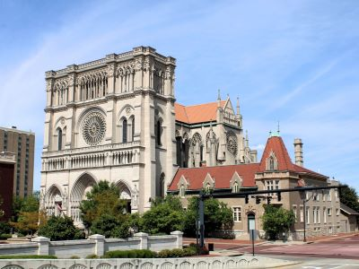
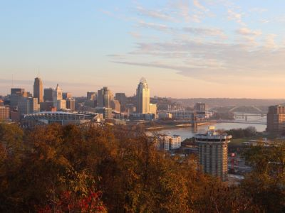
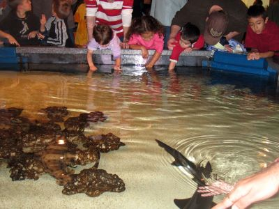
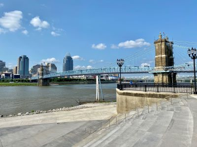

Historic riverfront city blending 19th-century architecture, vibrant arts, and culinary culture with easy access to major regional attractions.
Places to See in Covington

Calstanhope, CC BY-SA 4.0, via Wikimedia Commons; Image Size Adjusted
BB Riverboats
Authentic riverboat cruise company offering sightseeing, dining, themed, and private charter experiences along the Ohio River with seasonal events and entertainment.

Calstanhope, CC BY-SA 4.0, via Wikimedia Commons; Image Size Adjusted
Cathedral Basilica of the Assumption
Gothic Revival cathedral featuring over 80 stained glass windows, Italian-carved gargoyles, and a soaring nave inspired by Notre-Dame de Paris.

Calstanhope, CC BY-SA 4.0, via Wikimedia Commons; Image Size Adjusted
Devou Park
Expansive natural preserve offering hiking, wildlife viewing, historical attractions, and educational programs across forests, wetlands, and lakeshores.

Calstanhope, CC BY-SA 4.0, via Wikimedia Commons; Image Size Adjusted
General James Taylor Park
Riverfront park offering panoramic views of the Cincinnati skyline, picnic shelters, fishing spots, and historical monuments in a peaceful urban setting.

Kenneth Dale Silvestri, CC BY-SA 4.0, via Wikimedia Commons; Image Size Adjusted
Newport Aquarium
Aquatic attraction featuring thousands of marine animals, immersive exhibits, and interactive experiences including Shark Bridge, penguin encounters, and touch tanks.

Lisa Andres, CC BY 2.0, via Wikimedia Commons; Image Size Adjusted
Riverfront Commons Trail
Multi-use urban trail offering scenic riverfront views, public art, and connections between Northern Kentucky's river cities through paved paths and plazas.
Calstanhope, CC BY-SA 4.0, via Wikimedia Commons; Image Size Adjusted
Vent Haven Museum
Private collection museum showcasing over 900 ventriloquist dummies, photographs, and memorabilia chronicling the history of ventriloquism.
General Information
How to Get There
From Louisville (95 mi): Take I-71 N toward Cincinnati for about 90 miles, then merge onto I-75 N and take exit 192 toward Covington; follow signs into the downtown historic district.
Overview
Covington is a city in northern Kentucky on the south bank of the Ohio River, directly across from Cincinnati, Ohio, and it is the largest city in Northern Kentucky. It is known for its German heritage, its historic neighborhoods such as MainStrasse Village, and its position at the foot of the John A. Roebling Suspension Bridge, which connects it to Cincinnati. The city has a lively riverfront and a growing restaurant and craft beer scene, with views of the Cincinnati skyline.
Visitors come to Covington for the Newport Aquarium across the river in Newport, for the German-style shops and festivals of MainStrasse Village, and for the Cathedral Basilica of the Assumption. They also come for the views from Devou Park, for riverboat cruises with BB Riverboats, and for a walk across the Roebling Bridge to downtown Cincinnati, and it is a convenient and less expensive base for Cincinnati sightseeing.
History
Covington was founded in 1815 and named for General Leonard Covington, a hero of the War of 1812, and it grew rapidly as a river port and manufacturing city across from Cincinnati. In the mid-nineteenth century, German and Irish immigrants settled the area, and the city's brick houses and churches reflect that heritage. The John A. Roebling Suspension Bridge, completed in 1866, was the longest suspension bridge in the world at the time, and it was a prototype for Roebling's later Brooklyn Bridge. In the late twentieth century the city's riverfront was redeveloped with offices and hotels, and its historic areas have been revived.
Sightseeing and Popular Landmarks
MainStrasse Village is a historic district with brick streets, German restaurants, and the Carroll Chimes Bell Tower, a glockenspiel that plays the story of the Pied Piper, and the Goose Girl Fountain. The Cathedral Basilica of the Assumption is a Gothic Revival church with one of the largest stained glass windows in the world, and General James Taylor Park has views of the Ohio River. The Riverfront Commons Trail is a riverside path, and the Roebling Suspension Bridge connects Covington to Cincinnati.
Culture and Museums
The Newport Aquarium, with its shark tunnel and penguins, is one of the best aquariums in the region, and the Vent Haven Museum in nearby Fort Mitchell is the only museum in the world devoted to ventriloquism, with more than 1,000 dummies. The Behringer-Crawford Museum in Devou Park covers local history, and the Carnegie Visual and Performing Arts Center has exhibits and shows. MainStrasse hosts festivals such as Maifest and Oktoberfest.
Parks
Devou Park is a large hilltop park with an overlook of the Cincinnati skyline, trails, a golf course, and an amphitheater, and the Riverfront Commons Trail connects Covington with Newport and Ludlow along the Ohio River. Goebel Park and Randolph Park have small gardens and playgrounds, and Fort Mitchell and the Kenton County parks have more green space. The area also has views of the river from the Roebling Bridge walkway.
Seasons and Weather
Covington has a humid continental to humid subtropical climate. Summers are hot and humid, with highs in the upper 80s°F, and winters are cool, with highs in the 30s°F and about 20 inches of snow. Spring and fall are the most comfortable seasons for walking and riverfront activities.
This article uses material from Wikipedia as well as information from official tourism and institutional sources. Key references include Visit Covington, Newport Aquarium, Devou Park, Vent Haven Museum, Kentucky Tourism, and National Weather Service Wilmington, OH. Wikipedia material is from the articles "Covington, Kentucky" and "John A. Roebling Suspension Bridge", and is available under the Creative Commons Attribution-Share-Alike License 3.0.
-1000 -1.jpg)
.jpg){kind=link}